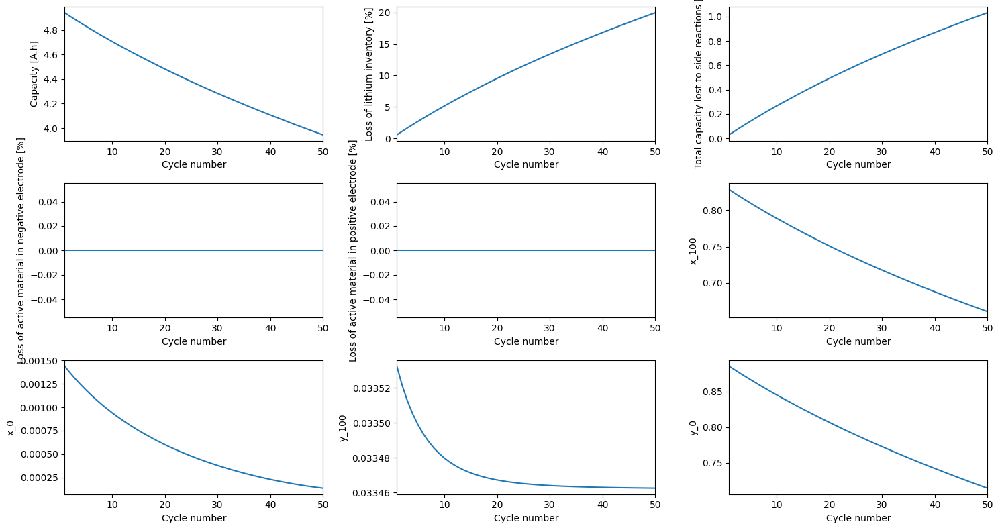
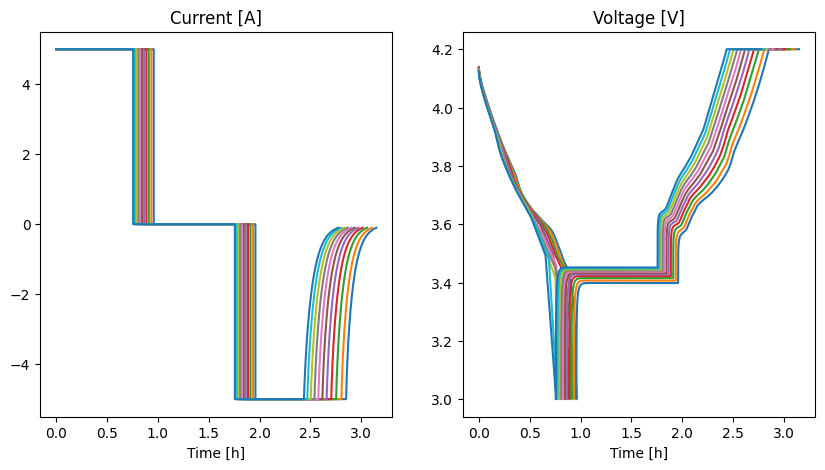

Tip
An interactive online version of this notebook is available, which can be
accessed via

Alternatively, you may download this notebook and run it offline.
Simulating long experiments#
This notebook introduces functionality for simulating experiments over hundreds or even thousands of cycles.
[1]:
%pip install "pybamm[plot,cite]" -q # install PyBaMM if it is not installed
import matplotlib.pyplot as plt
import pybamm
Note: you may need to restart the kernel to use updated packages.
Simulating long experiments#
In the interest of simplicity and running time, we consider a SPM with SEI effects leading to linear degradation, with parameter values chosen so that the capacity fades by 20% in just a few cycles
[2]:
parameter_values = pybamm.ParameterValues("Mohtat2020")
parameter_values.update({"SEI kinetic rate constant [m.s-1]": 1e-14})
spm = pybamm.lithium_ion.SPM({"SEI": "ec reaction limited"})
We initialize the concentration in each electrode at 100% State of Charge
[3]:
# Calculate stoichiometries at 100% SOC
parameter_values.set_initial_stoichiometries(1);
We can now simulate a single CCCV cycle using the Experiment class (see this notebook for more details)
[4]:
experiment = pybamm.Experiment(
[
(
"Discharge at 1C until 3V",
"Rest for 1 hour",
"Charge at 1C until 4.2V",
"Hold at 4.2V until C/50",
)
]
)
sim = pybamm.Simulation(spm, experiment=experiment, parameter_values=parameter_values)
sol = sim.solve()
Alternatively, we can simulate many CCCV cycles. Here we simulate either 100 cycles or until the capacity is 80% of the initial capacity, whichever is first. The capacity is calculated by the eSOH model
[5]:
experiment = pybamm.Experiment(
[
(
"Discharge at 1C until 3V",
"Rest for 1 hour",
"Charge at 1C until 4.2V",
"Hold at 4.2V until C/50",
)
]
* 100,
termination="80% capacity",
)
sim = pybamm.Simulation(spm, experiment=experiment, parameter_values=parameter_values)
sol = sim.solve()
Summary variables#
We can plot standard variables like the current and voltage, but it isn’t very instructive on these timescales
[6]:
sol.plot(["Current [A]", "Voltage [V]"])
[6]:
<pybamm.plotting.quick_plot.QuickPlot at 0x35b454490>
Instead, we plot “summary variables”, which show how the battery degrades over time by various metrics. Some of the variables also have “Change in …”, which is how much that variable changes over each cycle. This can be achieved by using plot_summary_variables method of pybamm, which can also be used to compare “summary variables” extracted from 2 or more solutions.
[7]:
sorted(sol.summary_variables.all_variables)
[7]:
['Capacity [A.h]',
'Capacity [mA.h.cm-2]',
'Change in local ECM resistance [Ohm]',
'Change in loss of active material in negative electrode [%]',
'Change in loss of active material in positive electrode [%]',
'Change in loss of capacity to negative SEI [A.h]',
'Change in loss of capacity to negative SEI on cracks [A.h]',
'Change in loss of capacity to negative lithium plating [A.h]',
'Change in loss of capacity to positive SEI [A.h]',
'Change in loss of capacity to positive SEI on cracks [A.h]',
'Change in loss of capacity to positive lithium plating [A.h]',
'Change in loss of lithium inventory [%]',
'Change in loss of lithium inventory, including electrolyte [%]',
'Change in loss of lithium to negative SEI [mol]',
'Change in loss of lithium to negative SEI on cracks [mol]',
'Change in loss of lithium to negative lithium plating [mol]',
'Change in loss of lithium to positive SEI [mol]',
'Change in loss of lithium to positive SEI on cracks [mol]',
'Change in loss of lithium to positive lithium plating [mol]',
'Change in negative electrode capacity [A.h]',
'Change in positive electrode capacity [A.h]',
'Change in throughput capacity [A.h]',
'Change in throughput energy [W.h]',
'Change in time [h]',
'Change in time [s]',
'Change in total capacity lost to side reactions [A.h]',
'Change in total lithium [mol]',
'Change in total lithium in electrolyte [mol]',
'Change in total lithium in negative electrode [mol]',
'Change in total lithium in particles [mol]',
'Change in total lithium in positive electrode [mol]',
'Change in total lithium lost [mol]',
'Change in total lithium lost from electrolyte [mol]',
'Change in total lithium lost from particles [mol]',
'Change in total lithium lost to side reactions [mol]',
'Cyclable lithium capacity [A.h]',
'Cyclable lithium capacity [mA.h.cm-2]',
'Formation capacity loss [A.h]',
'Formation capacity loss [mA.h.cm-2]',
'Local ECM resistance [Ohm]',
'Loss of active material in negative electrode [%]',
'Loss of active material in positive electrode [%]',
'Loss of capacity to negative SEI [A.h]',
'Loss of capacity to negative SEI on cracks [A.h]',
'Loss of capacity to negative lithium plating [A.h]',
'Loss of capacity to positive SEI [A.h]',
'Loss of capacity to positive SEI on cracks [A.h]',
'Loss of capacity to positive lithium plating [A.h]',
'Loss of lithium inventory [%]',
'Loss of lithium inventory, including electrolyte [%]',
'Loss of lithium to negative SEI [mol]',
'Loss of lithium to negative SEI on cracks [mol]',
'Loss of lithium to negative lithium plating [mol]',
'Loss of lithium to positive SEI [mol]',
'Loss of lithium to positive SEI on cracks [mol]',
'Loss of lithium to positive lithium plating [mol]',
'NPR',
'Negative electrode capacity [A.h]',
'Negative electrode capacity [A.h]',
'Negative electrode capacity [mA.h.cm-2]',
'Negative electrode excess capacity ratio',
'Negative positive ratio',
'Positive electrode capacity [A.h]',
'Positive electrode capacity [A.h]',
'Positive electrode capacity [mA.h.cm-2]',
'Positive electrode excess capacity ratio',
'Practical NPR',
'Practical negative positive ratio',
'Q',
'Q_Li',
'Q_n',
'Q_n * (x_100 - x_0)',
'Q_p',
'Q_p * (y_0 - y_100)',
'Throughput capacity [A.h]',
'Throughput energy [W.h]',
'Time [h]',
'Time [s]',
'Total capacity lost to side reactions [A.h]',
'Total lithium [mol]',
'Total lithium in electrolyte [mol]',
'Total lithium in negative electrode [mol]',
'Total lithium in particles [mol]',
'Total lithium in positive electrode [mol]',
'Total lithium lost [mol]',
'Total lithium lost from electrolyte [mol]',
'Total lithium lost from particles [mol]',
'Total lithium lost to side reactions [mol]',
'Un(x_0)',
'Un(x_100)',
'Up(y_0)',
'Up(y_0) - Un(x_0)',
'Up(y_100)',
'Up(y_100) - Un(x_100)',
'n_Li',
'x_0',
'x_100',
'x_100 - x_0',
'y_0',
'y_0 - y_100',
'y_100']
The “summary variables” associated with a particular model can also be accessed as a list (which can then be edited) -
[8]:
spm.summary_variables
[8]:
['Time [s]',
'Time [h]',
'Throughput capacity [A.h]',
'Throughput energy [W.h]',
'Loss of lithium inventory [%]',
'Loss of lithium inventory, including electrolyte [%]',
'Total lithium [mol]',
'Total lithium in electrolyte [mol]',
'Total lithium in particles [mol]',
'Total lithium lost [mol]',
'Total lithium lost from particles [mol]',
'Total lithium lost from electrolyte [mol]',
'Loss of lithium to negative SEI [mol]',
'Loss of capacity to negative SEI [A.h]',
'Loss of lithium to positive SEI [mol]',
'Loss of capacity to positive SEI [A.h]',
'Total lithium lost to side reactions [mol]',
'Total capacity lost to side reactions [A.h]',
'Local ECM resistance [Ohm]',
'Negative electrode capacity [A.h]',
'Loss of active material in negative electrode [%]',
'Total lithium in negative electrode [mol]',
'Loss of lithium to negative lithium plating [mol]',
'Loss of capacity to negative lithium plating [A.h]',
'Loss of lithium to negative SEI on cracks [mol]',
'Loss of capacity to negative SEI on cracks [A.h]',
'Positive electrode capacity [A.h]',
'Loss of active material in positive electrode [%]',
'Total lithium in positive electrode [mol]',
'Loss of lithium to positive lithium plating [mol]',
'Loss of capacity to positive lithium plating [A.h]',
'Loss of lithium to positive SEI on cracks [mol]',
'Loss of capacity to positive SEI on cracks [A.h]']
Here the only degradation mechanism is one that causes loss of lithium, so we don’t see loss of active material
[9]:
pybamm.plot_summary_variables(sol)

[9]:
array([[<Axes: xlabel='Cycle number', ylabel='Capacity [A.h]'>,
<Axes: xlabel='Cycle number', ylabel='Loss of lithium inventory [%]'>,
<Axes: xlabel='Cycle number', ylabel='Total capacity lost to side reactions [A.h]'>],
[<Axes: xlabel='Cycle number', ylabel='Loss of active material in negative electrode [%]'>,
<Axes: xlabel='Cycle number', ylabel='Loss of active material in positive electrode [%]'>,
<Axes: xlabel='Cycle number', ylabel='x_100'>],
[<Axes: xlabel='Cycle number', ylabel='x_0'>,
<Axes: xlabel='Cycle number', ylabel='y_100'>,
<Axes: xlabel='Cycle number', ylabel='y_0'>]], dtype=object)
To suggest additional summary variables, open an issue!
Choosing which cycles to save#
If the simulation contains thousands of cycles, saving each cycle in RAM might not be possible. To get around this, we can use save_at_cycles. If this is an integer n, every nth cycle is saved. If this is a list, all the cycles in the list are saved. The first cycle is always saved.
[10]:
# With integer
sol_int = sim.solve(save_at_cycles=5)
# With list
sol_list = sim.solve(save_at_cycles=[30, 45, 55])
[11]:
sol_int.cycles
[11]:
[<pybamm.solvers.solution.Solution at 0x35c997c90>,
None,
None,
None,
<pybamm.solvers.solution.Solution at 0x35a27f510>,
None,
None,
None,
None,
<pybamm.solvers.solution.Solution at 0x35c8d8750>,
None,
None,
None,
None,
<pybamm.solvers.solution.Solution at 0x35ca28a10>,
None,
None,
None,
None,
<pybamm.solvers.solution.Solution at 0x35caeaed0>,
None,
None,
None,
None,
<pybamm.solvers.solution.Solution at 0x35a1a2f10>,
None,
None,
None,
None,
<pybamm.solvers.solution.Solution at 0x35cc288d0>,
None,
None,
None,
None,
<pybamm.solvers.solution.Solution at 0x35ca7ccd0>,
None,
None,
None,
None,
<pybamm.solvers.solution.Solution at 0x35cab1e10>,
None,
None,
None,
None,
<pybamm.solvers.solution.Solution at 0x35ca42d50>,
None,
None,
None,
None,
<pybamm.solvers.solution.Solution at 0x35cc4d950>]
[12]:
sol_list.cycles
[12]:
[<pybamm.solvers.solution.Solution at 0x35ccec790>,
None,
None,
None,
None,
None,
None,
None,
None,
None,
None,
None,
None,
None,
None,
None,
None,
None,
None,
None,
None,
None,
None,
None,
None,
None,
None,
None,
None,
<pybamm.solvers.solution.Solution at 0x35cc3c790>,
None,
None,
None,
None,
None,
None,
None,
None,
None,
None,
None,
None,
None,
None,
<pybamm.solvers.solution.Solution at 0x35ce25610>,
None,
None,
None,
None,
None]
For the cycles that are saved, you can plot as usual (note off-by-1 indexing)
[13]:
sol_list.cycles[44].plot(["Current [A]", "Voltage [V]"])
[13]:
<pybamm.plotting.quick_plot.QuickPlot at 0x35cf078d0>
[14]:
fig, ax = plt.subplots(1, 2, figsize=(10, 5))
for cycle in sol_int.cycles:
if cycle is not None:
t = cycle["Time [h]"].data - cycle["Time [h]"].data[0]
ax[0].plot(t, cycle["Current [A]"].data)
ax[0].set_xlabel("Time [h]")
ax[0].set_title("Current [A]")
ax[1].plot(t, cycle["Voltage [V]"].data)
ax[1].set_xlabel("Time [h]")
ax[1].set_title("Voltage [V]")

All summary variables are always available for every cycle, since these are much less memory-intensive
[15]:
pybamm.plot_summary_variables(sol_list)
[15]:
array([[<Axes: xlabel='Cycle number', ylabel='Capacity [A.h]'>,
<Axes: xlabel='Cycle number', ylabel='Loss of lithium inventory [%]'>,
<Axes: xlabel='Cycle number', ylabel='Total capacity lost to side reactions [A.h]'>],
[<Axes: xlabel='Cycle number', ylabel='Loss of active material in negative electrode [%]'>,
<Axes: xlabel='Cycle number', ylabel='Loss of active material in positive electrode [%]'>,
<Axes: xlabel='Cycle number', ylabel='x_100'>],
[<Axes: xlabel='Cycle number', ylabel='x_0'>,
<Axes: xlabel='Cycle number', ylabel='y_100'>,
<Axes: xlabel='Cycle number', ylabel='y_0'>]], dtype=object)
Starting solution#
A simulation can be performed iteratively by using the starting_solution feature. For example, we first solve for 10 cycles
[16]:
experiment = pybamm.Experiment(
[
(
"Discharge at 1C until 3V",
"Rest for 1 hour",
"Charge at 1C until 4.2V",
"Hold at 4.2V until C/50",
)
]
* 10,
termination="80% capacity",
)
sim = pybamm.Simulation(spm, experiment=experiment, parameter_values=parameter_values)
sol = sim.solve()
If we give sol as the starting solution this will then solve for the next 10 cycles
[17]:
sol2 = sim.solve(starting_solution=sol)
We have now simulated 20 cycles
[18]:
len(sol2.cycles)
[18]:
20
References#
The relevant papers for this notebook are:
[19]:
pybamm.print_citations()
[1] Joel A. E. Andersson, Joris Gillis, Greg Horn, James B. Rawlings, and Moritz Diehl. CasADi – A software framework for nonlinear optimization and optimal control. Mathematical Programming Computation, 11(1):1–36, 2019. doi:10.1007/s12532-018-0139-4.
[2] Ferran Brosa Planella and W. Dhammika Widanage. Systematic derivation of a Single Particle Model with Electrolyte and Side Reactions (SPMe+SR) for degradation of lithium-ion batteries. Submitted for publication, ():, 2022. doi:.
[3] Von DAG Bruggeman. Berechnung verschiedener physikalischer konstanten von heterogenen substanzen. i. dielektrizitätskonstanten und leitfähigkeiten der mischkörper aus isotropen substanzen. Annalen der physik, 416(7):636–664, 1935.
[4] Charles R. Harris, K. Jarrod Millman, Stéfan J. van der Walt, Ralf Gommers, Pauli Virtanen, David Cournapeau, Eric Wieser, Julian Taylor, Sebastian Berg, Nathaniel J. Smith, and others. Array programming with NumPy. Nature, 585(7825):357–362, 2020. doi:10.1038/s41586-020-2649-2.
[5] Alan C. Hindmarsh. The PVODE and IDA algorithms. Technical Report, Lawrence Livermore National Lab., CA (US), 2000. doi:10.2172/802599.
[6] Alan C. Hindmarsh, Peter N. Brown, Keith E. Grant, Steven L. Lee, Radu Serban, Dan E. Shumaker, and Carol S. Woodward. SUNDIALS: Suite of nonlinear and differential/algebraic equation solvers. ACM Transactions on Mathematical Software (TOMS), 31(3):363–396, 2005. doi:10.1145/1089014.1089020.
[7] Scott G. Marquis, Valentin Sulzer, Robert Timms, Colin P. Please, and S. Jon Chapman. An asymptotic derivation of a single particle model with electrolyte. Journal of The Electrochemical Society, 166(15):A3693–A3706, 2019. doi:10.1149/2.0341915jes.
[8] Peyman Mohtat, Suhak Lee, Jason B Siegel, and Anna G Stefanopoulou. Towards better estimability of electrode-specific state of health: decoding the cell expansion. Journal of Power Sources, 427:101–111, 2019.
[9] Peyman Mohtat, Suhak Lee, Valentin Sulzer, Jason B. Siegel, and Anna G. Stefanopoulou. Differential Expansion and Voltage Model for Li-ion Batteries at Practical Charging Rates. Journal of The Electrochemical Society, 167(11):110561, 2020. doi:10.1149/1945-7111/aba5d1.
[10] Valentin Sulzer, Scott G. Marquis, Robert Timms, Martin Robinson, and S. Jon Chapman. Python Battery Mathematical Modelling (PyBaMM). Journal of Open Research Software, 9(1):14, 2021. doi:10.5334/jors.309.
[11] Pauli Virtanen, Ralf Gommers, Travis E. Oliphant, Matt Haberland, Tyler Reddy, David Cournapeau, Evgeni Burovski, Pearu Peterson, Warren Weckesser, Jonathan Bright, and others. SciPy 1.0: fundamental algorithms for scientific computing in Python. Nature Methods, 17(3):261–272, 2020. doi:10.1038/s41592-019-0686-2.
[12] Andrew Weng, Jason B Siegel, and Anna Stefanopoulou. Differential voltage analysis for battery manufacturing process control. arXiv preprint arXiv:2303.07088, 2023.
[13] Xiao Guang Yang, Yongjun Leng, Guangsheng Zhang, Shanhai Ge, and Chao Yang Wang. Modeling of lithium plating induced aging of lithium-ion batteries: transition from linear to nonlinear aging. Journal of Power Sources, 360:28–40, 2017. doi:10.1016/j.jpowsour.2017.05.110.